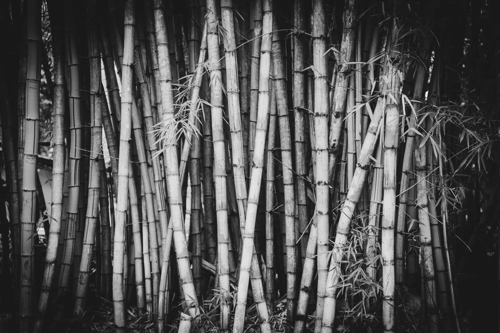
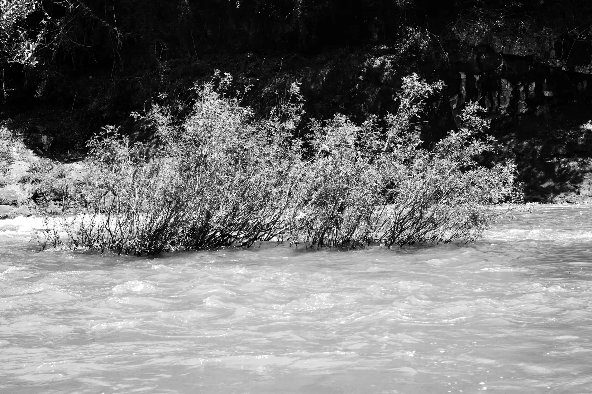
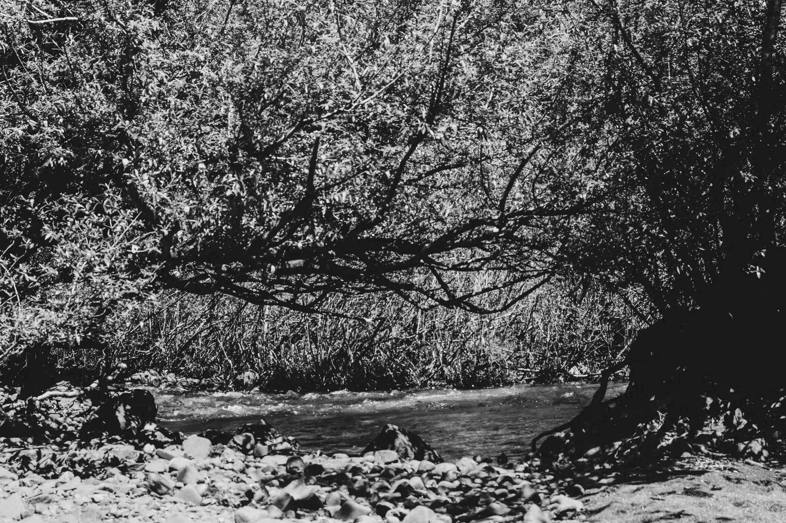

Paisajes misioneros en blanco y negro
Fotografío Misiones en blanco y negro porque me interesa despojar al paisaje de su postal, de ese verde exuberante con el que tantas veces se pretende contar una provincia sin hablar de quienes la habitan, de lo que desaparece y de aquello que todavía resiste.
Mis paisajes no buscan representar la belleza como una verdad indiscutible. Son fragmentos de mis viajes, de mis recorridos por el monte, de mi manera de pertenecer a esta tierra colorada. En ellos hay memoria, silencios, ausencias y una pregunta insistente por el futuro de nuestro territorio.
El blanco y negro es una decisión estética y política. Me permite trabajar con las texturas, las sombras y las formas, pero también alterar la mirada acostumbrada sobre Misiones. A través de la intervención textil, los bordados fluorescentes y las fotografías impresas sobre tela, incorporo otras materialidades, como si la imagen necesitara salirse de sus propios límites para seguir diciendo.
Esta serie forma parte de una investigación visual que reúne fotografía experimental, paisaje e intervención artística, con presentaciones previstas para noviembre de 2026 en la Bajada Vieja de Posadas y diciembre de 2026 en Mansión Villa Mercedes.
Fotografío estos paisajes para dedicárselos al futuro. No como quien conserva intacto un recuerdo, sino como quien deja una prueba de lo que existió, de lo que todavía tenemos y de aquello que no deberíamos permitir que desaparezca.
Porque el monte también tiene memoria. Y el futuro debería tener derecho a conocerla.






Obra
Seguir recorriendo